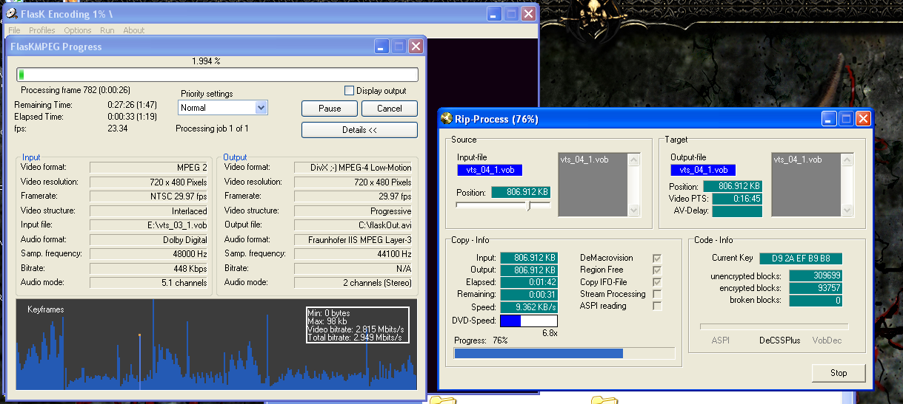
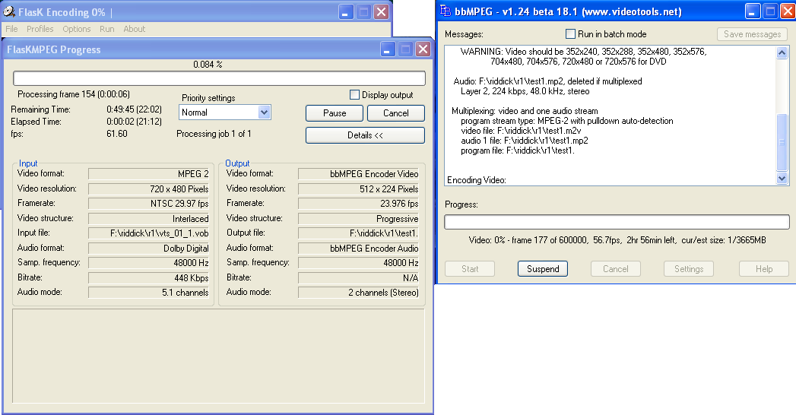
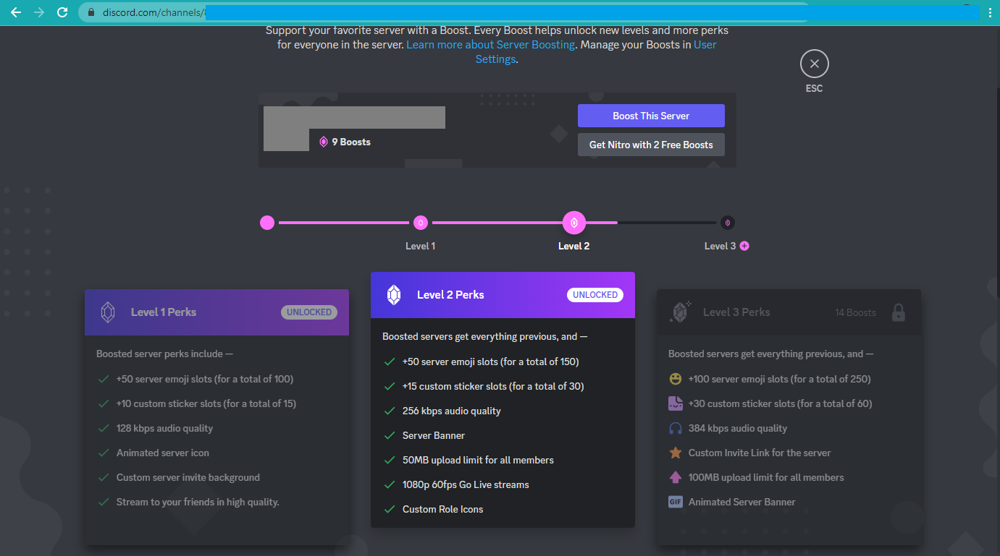

Table of ContentsVictory! The format wars are over. And we won! Victory!Unfortunately, we also lost. It depends on your perspective, priorities, technical knowledge, professional industry, and so on. For most people, it’s mostly a win. But I am not most people, and if you’re reading this article, then neither are you! First things firstWhat is a format? What is a format war? And why do we care? Briefly put, a format is a specified structure of some kind of media content, such as images or audio, and a format war is the inconvenient truth that it’s unrealistic to use every format every time, which leads to competition and – sometimes lamentably – attrition. One of the earliest modern examples of a format war is the videotape format war between VHS and Beta. They were two quite similar products to serve the same basic purpose, but still proprietary and incompatible with each other. A VHS player couldn’t play a Beta tape and vice versa, and they were initially quite expensive, so most families had to choose just one. Beta tapes allowed for higher quality video but not as much recording time, which was a key factor (along with marketing, most likely) in the VHS format’s rise to dominance. More VHS players meant more incentive to focus on VHS tapes, which meant more reason to buy a VHS player, and this feedback loop spelled the end of the Beta format – or at least, of Betamax, meant for the consumer market. Betacam, meant for the professional market, remained in use for many years. Years later, we had the privilege of enduring another format war, this time for high-definition video. Did you get an HD DVD player or a Blu-Ray player? If you made the wrong choice, you’d be stuck with a stagnant library while all new releases went to the winning format. The winner of that war was Blu-Ray, largely due to its use in the PlayStation 3, which was cheaper than most high-definition video players and served as a gaming console to boot. And now for something completely differentWell, not completely different, per se, but I quite enjoy putting little jokes and references into these headings. Cassettes and discs of various types are physical media formats, but there are also formats for describing just the data themselves, used in computing. Even the least computer-savvy among us is familiar with at least a few of these, like JPEG for photos and MP3 for music. These formats provide a sort of standard packaging for a file’s data, and they’re also accompanied by a corresponding “codec” which tells the computer how to enCOde or DECode those data. Note that this isn’t the secret kind of code, but simply the representation and conversion of information. There are formats and codecs or encodings for text, images, audio, video, file archives, typesetting, and everything else under the sun. But, what actually is a format or encoding? Like, what is it? Let’s get down to the nuts and bolts with a simplified example of an image format and codec. Computers show images as a grid of appropriately-colored pixels, so our format could tell a computer about an image by first providing the dimensions of the image and then describing each pixel, one at a time, by its colors. Our codec will use the colors red, green, and blue, which can combine to show any shade (commonly referred to as RGB). Each color will have a value of 0 through 9, for a total of 1,000 possible colors. So, if our codec is given an image to encode, it will first write down the dimensions, such as 640 pixels wide by 480 pixels tall, and then continue with e.g. 000 for a black pixel or 770 for a dark yellow pixel, until we’ve described every pixel. Once we have an image file constructed in our format and its data specified by our codec, we can give this file to a photo gallery program. The program will look for the image data using the format’s specifications, and then use a decoder for our codec that instructs it how to read the image dimensions, then read three digits at a time for each pixel until it’s complete. The program will use this information to show us the image. You may have noticed some flaws in our format and its codec. How exactly do we specify the dimensions? How large can each dimension be? What if we want more precise colors (common displays are capable of 16.7 million colors)? We didn’t consider things like transparency, either. Even worse, there’s no compression of any kind, so file sizes would scale linearly with the number of pixels in the image, regardless of the image’s complexity. With our simple format, a completely black image that was ten million pixels wide and tall would be a gigantic file to store and manipulate even though I just described it with just a few English words. This is why there are so many formats and codecs: each one has different strengths and weaknesses, features and failings. The ASCII text format is simpler and smaller than Unicode, but Unicode can handle many more unique characters. The BMP image format stores every pixel exactly as intended, a little like our example format, which results in large files. The JPEG image format can compress images for excellent file size savings, but it does this by preserving only an approximation of the original image, so some details are discarded and lost. Lost in endless timeLet’s continue by casting our gaze into the misty depths of forgotten history. To be more specific, that would be 2007, which is sufficiently ancient that we may firmly consider it antiquity for our purposes. I wrote this guide to DVD archival on October 30, 2007, judging by the date of last modification on its image files. At that point in my life, I was studying for a degree in technical writing, but I don’t believe I wrote this guide for that. I also had a Geocities site, but I don’t think I uploaded it there, especially given the rather stringent storage and bandwidth quotas. And yet, it’s an HTML document. Why? Perhaps I was simply keeping my skills sharp with Dreamweaver MX 2004, a graphical web design tool that I’d learned in high school a couple years prior. Alas, the world may never know my motivations with certainty. Suffice it to say, it was an ugly process with ugly results that were ugly. But that’s what I did! And I recommended it, too (albeit to no one in particular, as my content doesn’t exactly command the biggest readership around). I still have rips of DVDs from this time period, when I’d buy DVDs online not from Amazon but from Deep Discount DVD, which doesn’t exist anymore but they had decent prices and I think their mascot was some kind of anthropomorphic illustrated shark. Actually, upon further research via The Internet Archive, I’m partly wrong. Deep Discount DVD no longer exists, because they became Deep Discount when they started offering other products like books and clothing. Fortunately, I was right about the shark: That logo is no longer in use, but it’s still a shark! Ah, nostalgia. Anyway, those rips are low-resolution (480 by 320, twice the width and height of YouTube’s lowest available resolution), filled with motion artifacting, and with a tendency for audio sync to drift over time due to frame rates or something. To translate into plain English for non-technical users who probably aren’t reading this article, they’re fuzzy, they occasionally have weird glitches in some areas, and sounds happen further and further away from their visuals as the episode or movie progresses. To top it all off, the files are really large, comparable with modern HD video. That was the best we could do with good old DivX 3.11a, and it sufficed for me. Whenever I wanted to watch those videos, I could just push a few buttons on my computer without having to pull out any DVDs, which also minimized opportunities to scratch the discs. This format was also compatible with the superlatively excellent Cowon A2, a portable media player from the mid-aughts which I still have to this day. This meant that I could watch my DVDs anywhere I wanted, quite a treat for long flights. It’s worth mentioning the audio as well as the video. The audio, fortunately, wasn’t nearly as ugly. The MP3 codec can take uncompressed CD-quality music and squeeze it down (with some data loss, like JPEG) as much as you want – a fifth of its original size while maintaining very good quality, a tenth of its original size while maintaining decent quality, even a twentieth of its original size at a quality that’s mediocre at best but still usable, especially for less complex audio like speech. This is done by specifying a target bit rate, simply how many bits of data are used for a given duration of content (almost always one second), usually expressed these days with SI prefixes like kbps for kilobits per second so that the numbers don’t get too unwieldy. Note that these are bits, not bytes, meaning just the smallest unit of binary information, which can take a value of 0 or 1. A byte is a group of eight bits, so you’ll need to keep this in mind if you’re working with both. One second of audio at 80 kilobits per second would thus have a file size of 10 kilobytes. This particular value is pretty low quality with the MP3 codec. The most commonly used bit rate is 128 kbps. People willing to sacrifice storage space for better quality might use 256 kbps or even more. Most devices can handle up to 320 kbps, and the format theoretically allows up to 640 kbps, but there are codecs with lossless compression algorithms (expressing data more compactly without discarding any of it) that can achieve lower bit rates than that anyway, so there’s not much point. The most common lossless audio format and codec these days is the Free Lossless Audio Codec, FLAC. Professional courtesyA lawyer is sailing a small boat when a particularly boisterous wave tosses him into shark-infested waters. It takes time for the rescuers to arrive, and they fear the worst, but they pull him aboard unharmed. “Why didn’t the sharks attack you?” they ask. The lawyer answers, “professional courtesy." Get it? Because lawyers are sharks. The American Bar Association monitored all lawyer action in this article and no lawyers’ feelings were harmed in the making of this joke, because they don’t have any. Get it? Again? Lawyers. The ABA didn’t actually monitor this article, it’s a joke, please don’t sue. The point of all that was to dive into that little word in Free Lossless Audio Codec: “Free.” Some codecs are not free. Developing a codec can be very complex, and their creators would like to be compensated for their work, so they patent said work. If a third party wants to make hardware or software that can handle that codec, they need to pay licensing fees to the creators and/or implement it themselves. Unlike a novel gearing mechanism or radio antenna, the whole point of a format or codec is to allow different systems to work together, so adoption rates matter. Using a patented system can cause legal issues, ranging from simply paying licensing fees to being sued for using the patented system in an unlicensed way. This can drive away potential users, making it more difficult to find compatible equipment and leading to such codecs being called “patent-encumbered,” as these legal issues encumber a codec’s popularity and practicality. Thus, a patent-encumbered codec has to be quite good to gain any adoption, much less widespread use. There are actually quite a few patented codecs with varying degrees of popularity, notably the MP3 codec, which was patented by its original creators, with various other related patented works from other entities. It was a very competitive codec at the time from a technical standpoint, so it was widely licensed. Some organizations created free implementations of the MP3 codec, and subsequently encountered legal issues. The developers of the LAME MP3 encoder, one of the most capable and popular free MP3 encoders used by consumers, could only officially distribute source code, so the burden fell to users to dig around for a compiled executable and install it into whatever software we wanted to use rather than simply using something that worked out of the box. All related patents have since expired, but it was quite a hassle back then, and it’s not a state-of-the-art codec anymore anyway. The fact that the length of a patent term can easily cover the vast majority of a tech product’s useful life is another issue entirely. The Next GenerationProgress didn’t stop there. The Advanced Video Codec, AVC, soon became the most widely-used video codec worldwide, patented but with several convenient licensing concessions. It can be used for free when streaming video to end users who view for free, there are open-source encoders whose licensing is already taken care of, and so on. It has pretty much universal device and software support, doesn’t take very powerful hardware to decode, can be encoded in real time in many use cases, and offers good quality and efficiency. It’s absolutely everywhere. AVC is often combined with the Advanced Audio Codec, AAC, which offers better efficiency and features compared to MP3. As you might expect by now, it’s patented. Implementing a codec that adheres to the AAC specs requires licensing, but distributing AAC-encoded audio does not. We’re not done, of course. The rise of streaming media has driven an absolutely enormous research effort into more efficient codecs and formats. Smaller files mean lower storage and bandwidth costs, which can translate into many millions of dollars at the mind-boggling scale at which YouTube and other large services operate. Audio now has the excellent Opus codec (lossy, free to use, extremely high quality). Video has HEVC, VP8, VP9, VVC, AV1... an embarrassment of selection. Image formats aren’t to be left out, of course, with WebP, AVIF, HEIF/HEIC, and JPEG XL seeing the most use besides older formats like JPEG, PNG, and GIF. A plethora of optionsWould you say we have a plethora of options? You would? We do? Well, what is a plethora? I would not like to think that a person would tell someone he has a plethora and find out that that person has no idea what it means to have a plethora. If you don’t know what it means to have a plethora of encoding options, you don’t know whether that’s good or bad. Now that that reference has more than overstayed its welcome, we do have many options, but what used to be a good thing has turned sour. Standards are unicorns. There’s a theory that you can cure this by following standards, except there are more “standards” than there are things computers can actually do, and these standards are all variously improved and maligned by the personal preferences of the people coding them, so no collection of code has ever made it into the real world without doing a few dozen identical things a few dozen not even remotely similar ways. The first few weeks of any job are just figuring out how a program works even if you’re familiar with every single language, framework, and standard that’s involved, because standards are unicorns. Standards suffer from dilution. Attempts to unify and simply a situation end up adding to the complexity without removing anything. This isn’t unique to programming, computers, or even technology: Esperanto is a language initially created by a single designer in the late 1800s, L. L. Zamenhof. The goal was to allow Europe’s disparate cultural blocs to communicate in a single common language. There was just one problem: everyone already spoke a language, so Esperanto would mean a second language, and all those people would have to agree on it. In direct opposition to Zamenhof’s intentions, the world simply got yet another language. Today, it enjoys a small but enthusiastic following, albeit more as a novelty or curiosity than a practical communication tool. Learning a new language is hard, and most people won’t bother with one that doesn’t offer real-world opportunities for use. Ay, there’s the rubIt’s a simple rub. Which option should we choose, and why? Formats and codecs are saturated far past the point of having the right tool for the job, like PNG images for synthetic content such as screenshots or JPG images for photographic content. There are multiple candidates vying for the exact same use cases, especially with video, where most features employed by any given codec are intended to make it look better while taking up less space. As long as it can be decoded at 1x or greater for playback on a significant enough fraction of devices, speed is barely an afterthought. The AV1 codec, like most codecs, has a reference implementation developed by its core designers (AOM, the Alliance for Open Media). Unlike most codecs, that reference implementation generally manages to encode video in approximately one one-thousandth of realtime. Yes, AOM’s AV1 encoder can take over 15 minutes for a clip just one second long, with a typical resolution and frame rate. Now consider how many seconds are in a movie. Or, more directly, go back to that factor of a thousand: a 90-minute feature-length film will tie up a machine for about 1500 hours, or two months. Fortunately, Intel has collaborated with Netflix to develop their own open-source implementation (SVT-AV1) that’s an order of magnitude faster. That’s right: you can now encode a movie at home in a mere week or so! Amazing! This is much better than the couple hours or so it took in 2006: And, oh, how we used to suffer in 2011 when we got less than an hour to savor the encoding process! This is definitely what progress looks like for everyday consumers without access to giant server farms. Winning the format wars! It’s not for youVideo codec development has, over the past decade or two, gradually swung from enthusiasts and hobbyists to industry titans. Netflix has the resources to encode their content in AV1 so they can save on storage and bandwidth. You don’t. It’s not for you. Even YouTube doesn’t have the resources to encode every video to AV1 – for now, only the really popular videos merit that kind of effort. If you want to make practical use of modern video codecs beyond just consuming content, you’ll need one of several specific modern graphics cards and a good deal of tweaking that lets you move the workload from the CPU to the GPU, which is more specialized but also much more powerful. Video encoding is an increasingly daunting task for the home user... and increasingly vital. Consumer-captured media (still images, audio, and video) have exploded in popularity as the processes have gotten easier and cheaper, with better-quality results. Recording a home video no longer requires renting a camera and then storing the tape on a shelf. My current smartphone is a Samsung Galaxy Note 9, the company’s flagship model from almost five years ago, and it can shoot in 4K60. That’s 3840 by 2160 resolution at 60 frames per second, exactly 54 times the information density compared to the best efforts of my venerable Panasonic Lumix DMC-FZ50 from the mid-2000s, a mere 640 by 480 at 30 frames per second. Storing that much information is much easier than in the videotape days, but the numbers have obviously ballooned over the course of digital photography. Back to your turnips!Commoners and peasants toil away in electronic fields, while the landed gentry hoard technological developments. Insidiously, it isn’t a deliberate choice to artificially keep us down. It’s a simple result of the drivers of those developments having their own goals and not really caring about anyone else’s. YouTube and Netflix don’t mind taking a little while to compress their most popular content, but what of our digital photography that needs to encode video in real time? The solution, sadly, is to use very little compression. It’s the age-old problem of having to choose between speed, quality, and cost: for video capture, realtime speed is a hard requirement, and quality is the top metric that every layman can and will evaluate, so cost gets the short end of the stick. Ceteris paribus, more efficient video compression takes more encoding time, and so we can speed it up by increasing the allowed bit rate until it can encode in real time. It’s over 9000!Megabytes, that is, to record an hour and a half of 1080p30 video on an iPhone, even using the more-efficient HEVC rather than the typical AVC. I witnessed exactly this late last year (2022), when my parents filmed a friend’s bat mitzvah. The ceremony was about an hour and a half. The file is over nine gigs (9.222 gigabytes, or 8.588 gibibytes). How much storage do you have? Think beyond your PC with 12 terabytes of space across multiple drives (that’s my situation, anyway). The first place that has to store content captured by your phone is, obviously, your phone. How much room on there? 128 GB, maybe 256? Room for a microSD card to double that, perhaps? Now consider that you don’t want these files to be trapped in your phone. You want to transfer it to other devices, share it with other people, back it up in cloud storage, and so on. Well, your nine gig file is a nine gig file. That’s at least nine gigs! My parents’ solution was to upload the file to iCloud, at which point they could download it onto their PC (yes, that was the least inconvenient method) and share the video with the bat mitzvah’s family, who also uses iCloud. I can only imagine and hope that, internally, Apple (actually, they subcontract their cloud service to Google Cloud rather than running their own, last I heard, so I’m not sure who’s doing what here) is merely linking to the same copy rather than duplicating the entire file. But then I wonder, how does that affect storage quotas? Does it all come out of the original owner’s? Or does it take nine gigs from anyone who saves the file to their account? Or is the storage quota burden split between them? I have no idea, and I suddenly don’t want to think about it anymore. The fact remains that it’s a nine gig file. And that’s simply a bit rate issue; shorter videos don’t get more efficient compression. 90 one-minute videos would take up just as much room. I could help you do that betterI, being a scientist, was compelled – nay, contractually obligated – to meddle. My immediate and frantic inquest to learn the details, and my subsequent assessment of the problems we now faced, were met with nonplussed tolerance. But, as any scientist knows, one cannot let concerned stares drive one from the path to knowledge. After all, a mad scientist is still a scientist. Fortunately for my parents, or at least for my expectations of what they ought to care about, I’ve been doing this for a long time and have kept my hand in over the years. After uploading the original file to iCloud, and then downloading it back to my dad’s work computer (best possible CPU, couple hundred gigs of RAM – standard equipment for finite element analysis), I ran the command to process the file. It took an entire day. As in, more than 24 hours. And then we double-clicked the result to play it back and found that the colors were washed out. After another day or two of frustrated research that involved short test encodings, Google searches of things like FFmpeg VP9 encoder supported bit depth and colorspaces, and a few rounds of Weather Game with various encoders and players, I finally found the problem. The Windows 10 default video player app doesn’t properly handle WebM VP9. The file worked properly in other video players. So now we had an 825 MB file instead of a 9,222 MB file that we could share a lot more easily. It doesn’t really matter, since the only people interested in it already had access to it on iCloud, but now they have a more convenient copy for when bandwidth or storage space are concerns. The result is visually lossless, meaning that it doesn’t produce the exact same pixels of output as the original, and differences between corresponding frames can be rather easily spotted in a blink comparison at 250% zoom, but there’s no distinguishable quality loss in actual viewing. Of course, Apple being Apple, the default iOS video player doesn’t support this format, but VLC offers an iOS app that does (I’m sure there are other capable players as well). But I did it! Success! TrasherciseThere’s nothing quite like realizing that you’ve been duped into helping a corporation save money by doing their job for them at home for free. Why don’t companies like Apple provide any facility for compressing these ultra-high-bit rate videos? The answer is simple. As I said above, even YouTube doesn’t encode everything into AV1, reserving that for the very largest or most popular videos, because it’s a resource-intensive process. They don’t even want to devote the resources to create easy-to-use tools allowing users to do this on their own devices. They’ll do just enough to produce the files, and then leave users to figure out how to deal with these absolute storage and bandwidth hogs on our own, which usually means buying more storage and bandwidth, often from those selfsame companies. Tautology ClubThe first rule of Tautology Club is, of course, the first rule of Tautology Club, and we learn it when we try to explain to people why they should care about formats. KHInsider offers a huge repository of video game music, with most albums available in MP3 and FLAC, occasionally replacing one or both of these with other formats like M4A (the audio container format for AAC encoding) or Ogg. 99% of the files have extremely high bit rates for high quality, and 0% of the files are in Opus format which would save upwards of 50-70% compared to MP3 albums or 80-90% compared to FLAC. The cherry on top is that many albums aren’t copies of the game files, particularly for old systems that synthesize their music with the console’s proprietary sound chip. They’re simply recorded. And then uploaded in a lossless format. So an ancient game like Super Mario Bros. for NES has a 13 MB MP3 soundtrack or a 31 MB FLAC soundtrack, when the game itself is only 40 KB. That’s the whole game, including not only the music but also the sound effects, program code, and sprites. Emulators for these old systems are only a megabyte or two. Somehow, I suspect that not all of those 31 million bytes are absolutely necessary to represent the music. And yet, even though the webmaster makes a big deal out of how much it costs to run the site and sells paid memberships to unlock features like downloading an entire album with a single click, I’ve tried and failed twice to convince him of how neat it would be to use a better and more modern codec. The first time, the response was that the bulk of the storage and bandwidth comes from serving the FLAC files, and most people just want MP3s anyway, so an Opus copy wouldn’t be useful. The second time, when I suggested that I could handle everything because I see it as a fun and exciting project, the response mentioned a test of converting 200 albums to Opus. This was a small test for him with local access to the files, but a six-week slog for me without. My tests covered the site’s top 200 most popular albums of all time, according to this listing, at the time of writing. I encoded with Opus at 96 kbps, and moved album art from track metadata into separate files to avoid duplication. I also included any art that appeared on a soundtrack’s web page but wasn’t included in track metadata, usually in their original format, but converting to JPEG XL in extreme cases like Call of Duty: Black Ops 2 which has several images weighing in at dozens of megabytes apiece. The smallest total size of these files offered by the website is 73,895 MB (usually MP3 format), the largest total size is 189,318 MB (usually FLAC format), and the total size of the Opus encodings (often including additional album art, remember) is 28,508 MB. Thus, the minimum file size reduction is about 61%, the average reduction is 78%, and the maximum reduction is 85%. See the appendices at the end of this article for a complete table of all these files. The site owner, on the other hand, encoded his Opus test files at virtually the same bit rate as the MP3 versions, and concluded that Opus didn’t produce meaningful file size savings. In other news, aluminum is useless because a pound of aluminum weighs just as much as a pound of steel. At that point I gave up, and thus began my journey of enlightenment in which I gradually realized that the format wars are over and we lost. Fair And BalancedThe fact that we lost the format wars really hit me when the Chrome team dropped experimental support for the JPEG XL image format, which will remove the option of turning on a flag that allows Chrome to display JPEG XL images. And by “the Chrome team” I mean one single program manager who, by pure coincidence I’m sure, happens to be involved in the development of AVIF, a “competing” image format. I use scare-quotes there not to suggest that AVIF is poor competition, but that it’s not a competition at all – or it shouldn’t be, anyway. Even with feature creep and parallel evolution, there remain enough distinctions to justify coexistence. Jon Sneyers, a JPEG XL developer who is extremely active and helpful in the field and its surrounding community, is always quick to note the advantages of other formats rather than pretending his project is the be-all and end-all of image formats. Rather than shooing you off to pore through Cloudinary’s collection of Dr. Sneyers’ articles (Cloudinary is his employer and a key part of JPEG XL development), Chromium issue tracker threads, and Reddit posts, I’ll summarize the situation here. For decades now, the three main image formats used on the web have been JPEG for photographic content (real-world photos), PNG for synthetic content (screenshots, flowcharts, etc.), and GIF for animations. There are no strict boundaries enforcing this, of course; these are just the best uses of each format according to their strengths. And yes, there are animated versions of both JPEG (MJPEG) and PNG (APNG). These formats have served us well, but, surprise surprise, there’s been progress in computer science, and superior formats are available. WebPThe first modern format to appear was WebP, created by Google and intended for photo distribution on the web. It can compress images in a lossy mode with better quality and lower file size than JPEG, and it can compress images in a lossless mode with lower file size than PNG. It also allows for GIF-like animations. The encoder and decoder are both quite fast, and the images can be displayed in any modern browser, with a smattering of support among other software. Its major problem, in my considered opinion, is that Google’s official open-source library has a really idiotic default of discarding all metadata including color profiles. There’s an option to request it to please keep that information so your converted images don’t end up lighter or darker than they’re supposed to, but that should be the default. Lossless encoding in particular should be expected not to have any loss of important information that affects the appearance of the image. Other than that, and other than its much more meager compatibility and support compared to the older legacy formats, it’s kind of nice. When its successor, WebP2, was essentially killed off (as Google is wont to do), it became clear that this format is dead in the water. It also lacks many features that are unnecessary for photos on a web page but important elsewhere, like wider color gamuts. HEICHEIC is just HEVC intras in HEIF. I think that about sums it up. Right? No.To expand upon that, HEIF is a format that can store images, audio, or video data. When it’s used to store images that have been encoded with the HEVC codec (yes, that’s a video codec, more on that later), the result is known as an HEIC file. This was the image format that got me interested in image formats last year. I made an offhand comment about iPhone cameras using JPEG for photos, and someone corrected me: they use HEIC by default nowadays. Down that rabbit hole I went, and here we are. HEIC might be the format with the biggest gulf between how commonly it’s used and how commonly it’s known. It’s been the default image format on iOS for several years, and I’d be surprised if more than 1% of its users knew of its existence. The format is heavily patent-encumbered, with correspondingly poor compatibility, but it’s more efficient than JPEG, and iOS uses it to reduce file sizes while maintaining the same level of image quality. The system Apple came up with is very “Apple” – it’s still a walled garden, but it communicates seamlessly and transparently with the outside world. When an iPhone user takes a picture, it’s stored as an HEIC image. When they back it up on iCloud or send it to a friend’s iPhone, nothing unusual happens. However, if they send it outside Apple’s ecosystem, such as in an email, text message, other backup service, and so on, no they don’t. Send it, that is. Their Apple device or service converts the HEIC image to JPEG on the fly, and sends the JPEG instead. The process is totally invisible to the end user. The only downside I can think of is that it can mislead people into thinking they’re working with the original image file when they’re really not, and that’s a pretty darn small downside. My dad will literally save ISO images of DVD home movies because any lossy compression would involve loss and he can’t abide that notion, and even he wasn’t bothered when I explained to him that his photo backups weren’t actually the original files. That said, this behavior is optional. You can adjust the settings to save photos with HEIC and automatically convert to JPEG when needed (the default), save photos with JPEG in the first place, or save photos with HEIC and send the original file instead of converting. I’m no fan of Apple, but I firmly believe in giving credit where credit is due, and this system works well. AVIFAVIF is AV1 intras in HEIF. I think we’re done here. For real though, AVIF images are encoded with the AV1 codec. It supports lossy encoding, lossless encoding, and animations. The industry consortium backing this format is pushing it hard, but you’d be hard-pressed to find compatibility anywhere but web browsers. As with AV1, the AOM encoder is not usable due to its slow speed (several minutes to encode a single image). Even the SVT encoder is markedly slower than mature, less-efficient legacy formats, but it’s not too bad. What is bad is that FFmpeg’s latest build does offer AVIF encoding with SVT, but – surprisingly and yet somehow also obviously – the dimensions must be multiples of two, a common requirement with video codecs (some will insist on multiples of 8 or 16). For example, a height of 500 pixels is fine, but 501 would not be fine, and attempting to produce such an image with AVIF would result in an error. You have to add a filter that gives you acceptable dimensions, such as cropping out one line of pixels or scaling the image. The standalone AVIF encoder, avifenc.exe, has managed to overcome this issue and allows odd dimensions. However, it doesn’t offer SVT encoding, so it’s worthless. Harsh, but I won’t give credit where it isn’t due. The tooling is still too immature for practical consumer use, even for enthusiasts. Hi. I’m the JPEG organization.You may remember me from such standards as JPEG, JPEG 2000, JPEG LS, JPEG XR, JPEG XS, JPEG XT... The Joint Photographic Experts Group didn’t rest on their laurels after developing the JPEG format. They’ve developed a variety of formats for use cases that have proven less popular than cat pictures. The least obscure of the bunch is probably JPEG 2000, which has two primary uses. The first is in medical imaging, where it’s valued for its superior efficiency in lossless compression compared to PNG. The second is in digital cinema, as the format is capable of high-quality lossless animation. If you’ve watched a movie at a theater in the last several years, it was probably a JPEG 2000 image. JPEG XL is designed as a successor to JPEG, with the “L” signifying long-term use. It’s often abbreviated to its file extension, JXL (rhymes with “pixel,” but I usually pronounce it as an initialism). The format’s specification includes many features for personal and professional use, from high bit depth support to progressive decoding (showing an image in gradually improving quality as it’s downloaded) to tiled decoding (decoding only a certain section of an image, helpful when working with very large images). Not all of the spec’s features are implemented yet, but the reference codec has just recently gotten to version 0.8 at the time of writing. Give them some time. The format has a lossy mode, a lossless mode, and animation support, with superior efficiency and speed pretty much across the board. While codecs like AVIF are more adept at maintaining better image quality under very high compression, JPEG XL prioritizes performance with high-quality images. One of JPEG XL’s most interesting features is lossless JPEG transcoding, which starts with a regular JPEG and creates a JPEG XL image 15-25% smaller than the original, with no quality loss. The process can even be reversed to exactly reproduce the original JPEG file, basically serving as a more efficient way to transfer and store existing JPEGs without any generation loss (changes to the image resulting from resaving it in a new file with lossy compression). This makes it an easy choice for migrating an existing hoard of JPEGs to a new, more efficient format. The new, smaller files can be used as they are, or turned back into JPEGs when needed for a client that doesn’t yet support JPEG XL. Apple’s HEIC compatibility solution is good, but conversion to JPEG does result in a very slightly different image. Generation lossSometimes we end up with more than a slight difference, because we’ve converted and screenshotted and reposted and rotated and resized it until the slight differences added up to a glitchy mess. There’s even a layman’s term for it: moldy memes. JPEG XL has excellent resistance to generation loss, particularly compared to JPEG, the most common format by a gargantuan margin (even for synthetic content that would be much better suited to a lossless format like PNG). Surreptitiously switching people’s photos to a superior format might actually be easier than teaching them how to properly copy files and manage their photo collections. The average consumer isn’t Ansel Adams, the 20th-century photographer reputed to spend hours waiting for the perfect moment, take one single, perfect photograph, and leave. The average consumer is a teenager who takes several photos at a time and takes screenshots of the photo gallery for easier sharing because that app has incomplete sharing options (backup on archive.org in case the original gets deleted, and how about a photo backup because I’m paranoid). The result is over 30,000 images, around a quarter of which are screenshots, with up to a hundred nearly-identical versions of the same photo. The fault here lies not with the user, but with the systems that were provided. A gallery app should allow users to share photos to any app, not just messaging apps. As far as taking multiple photos where one would suffice, people have been doing that since the rise of cheap digital photography, so it shouldn’t be an unexpected use case. For a quick solution off the top of my head, how about a photo capture mode that prompts the user to snap multiple photos and then asks them to select the best one, discarding the rest. Whatever the case may be, these systems have to be designed around what users actually want to do and the way they want to do it. It’s a simple rule: “practicality beats purity.” Fast FashionThe design intent of long-term use also bears further examination: JPEG XL is not meant to merely supplement JPEG, but to replace it entirely, hence its combination of backward compatibility and forward thinking. Its superior efficiency, while excellent, isn’t enough for a long-term JPEG replacement – it also has new functionality to better deal with modern image-processing needs. Sadly, this sets it apart from the video landscape, which is littered with flash-in-the-pan formats and codecs that aren’t even mature, much less in widespread use, before being discarded in favor of a younger, more attractive codec. For video, this is particularly deleterious, as its complexity and corresponding file sizes are vastly larger than those of other media, making migration a serious effort not to be undertaken lightly. And yet, new ones pop up every few years promising better quality and compression. If I tried to embrace every new video codec, I’d barely finish reencoding my library before the next one reared its head. It’s almost worse than the trend for fast fashion, meaning clothes that are meant to be worn a few times and then discarded because they’re no longer in style. We can barely give them away anymore; some African countries are even considering banning the importation of used clothing. In the same vein, an article published just yesterday features an interview with a Qualcomm representative who suggested that they might just skip AV1 encoding (for recording videos) and wait for Versatile Video Coding, or VVC, a codec whose specifications were only finalized a few years ago. Given the massive encoding complexity of all these new video codecs juxtaposed with the necessity for real-time speed, recording directly with one of these codecs seems in my eyes to be barking up the wrong tree. Does recording in HEVC rather than AVC produce smaller files? Yes. Are they smaller than converted files that were encoded without time constraints? Absolutely not. There’s no dire need for alternative options for recording videos; we can already do that just fine. If we want to save space, the logical route at this time is to shoot videos with extreme bit rates for the highest possible quality, and then compress them afterwards. Call the original a “preview” to prevent people from getting attached to it, then process it over time and discard the original. Videos can be processed during idle periods, only while the phone is plugged in, at partial CPU loads, and so on. I’m sure that industry professionals could find a way to make this work and normalize it. It’s easier than designing new hardware, anyway. Nature and nurtureHere’s the later when we come back to more. In an ironic twist, JPEG XL has managed to be the only modern image format that’s actually designed from the ground up as an image format. WebP is based on the VP8 video codec, WebP’s intended successor WebP2 was to be based on VP8’s intended successor VP9, HEIC is based on the HEVC video codec, and AVIF is based on the AV1 video codec. They masquerade as image formats by limiting themselves to what’s called an “intraframe,” as opposed to “interframe.” “Intra” means within, and “inter” means between, as in e.g. the global Internet vs a company’s local intranet. The meat behind a video codec’s ability to compress a video stream is that digital video doesn’t exist as a simple series of individual pictures, like an old film reel. Instead of compressing each frame independently, video codecs look for differences between frames. A sitcom with a few characters moving around a static set will result in many frames in a row that show the same scenery and props in the same place. The codec can draw that part once and then just leave it alone until it finally changes, devoting the saved bandwidth to describing the people’s movements instead. An intraframe, also known as a keyframe, is a frame in a video that actually does contain the whole picture rather than relying on surrounding frames. They’re generally placed at scene changes or at regular intervals of five to ten seconds. An interframe is one of those efficient frames that’s compressed based on changes between frames. Thus, an image in one of these video-derived image codecs is basically just a video consisting of a single keyframe. As you might guess, the video-derived image codecs have some convenient optimizations available for adding animation to such an “image,” although it’s generally better to just make an actual video. The problem with these video intraframe image formats is that some things are relevant for still images that aren’t a consideration for video, which precludes the possibility of those particular features. For example, early versions of HEIC and AVIF couldn’t encode an image bigger than the 4K video resolution, because HEVC and AV1 hadn’t yet needed to do so before. They got around this by packing several images into a single file, to be arranged in a grid for display. Unfortunately, it was all too easy to spot in the resulting picture where one tile ended and the next began. Fortunately, AVIF and HEIC have since been updated to handle images up to 65536 by 65536 (2 to the 16th power). Next, since each frame of a video is only visible for a small fraction of a second, it doesn’t make sense to consider the situation where it takes a few seconds to download a single frame, so they have no facility for progressive decoding. Full image formats like JPEG, PNG, and JPEG XL can quickly show a fuzzy picture and then gradually fill in the details as the rest of the image is downloaded. This isn’t always vital, but it can come in handy for users on slow or unstable connections (such as mobile data, poor reception, etc.), and a partially-downloaded image with progressive decoding can even serve as its own thumbnail, obviating the need to generate and store a second set of images. Basically, video-derived image formats focus on quantity, while full image formats focus on quality. But in the end, it doesn’t even matterBecause not only are short-form videos with no audio still referred to as GIFs, they often actually are GIFs. Web video has progressed by leaps and bounds, inserting a video into a web page is as easy as Uploading a still image to Reddit is even less consistent. PNG images are maintained in their original format, JPEG images are sometimes maintained in their original format but also sometimes converted to WebP for previews, and WebP images are converted to rather low-quality JPEGs (with the exact same file size as the original WebP, in my experience). Even lossless WebP images fall victim to this mangling. It’s anyone’s guess as to why Reddit devs didn’t simply choose a preferred format and leave user uploads unchanged if they already match that format. Seriously, I have no idea why they do it this way. It makes no sense. With malice aforethoughtOh, how I yearn for those halcyon times when a corporate media format decision didn’t make sense. It’s immediately obvious why Discord offers the following audio options. Just look. That’s a lossless WebP image, by the way. The original PNG saved in Microsoft Paint was 148 KB, the PNG saved with FFmpeg’s PNG encoder was 105 KB, the JPEG XL saved at default settings was 90 KB, the WebP shown above is 84 KB, and the JPEG XL saved at the maximum compression effort setting was 73 KB. It would’ve been nice to go with the most efficient one, but the best I could do with reasonable confidence that it would actually display in your browser was WebP, because you lost the format wars. This image is from a screenshot my sister sent to me when debating whether she ought to support Discord and a server she participates in with a “boost,” which is a euphemism for money. At least it’s not “loyalty,” I suppose. Note one of the features listed as a perk: audio quality. Discord uses Opus for its audio, and the default bit rate for a free-tier server with no boosts is 64 kbps. That’s unlikely to be totally transparent (indistinguishable from the original in listening tests) for typical music, but it’s still quite good, more or less on par with MP3 at its de facto default bit rate of 128 kbps. For content that will primarily consist of speech, recorded with low-quality equipment in rooms with no acoustical considerations, it’s more than enough. If it’s not, administrators of free-tier servers can choose to increase the bit rate above the default, up to 96 kbps. Opus hits transparency for most content at that point. Discord’s “level 1 perk” for audio quality is 128 kbps, which is more or less the useful limit for two-channel (stereo) audio barring rare exceptions of complex material like harpsichord music. Level 2 allows 256 kbps. Level 3? 384 kbps. Boost now! You need this! Transact money posthaste! Given the choice between inexplicable format conversion decisions and blatantly misleading people into buying things they don’t need, I think I prefer the former. It’s not a comfortable choice, but we lost the format wars. The bazaarThis is why the bazaar is more preferable to the cathedral than ever. If I were locked into the Apple ecosystem, I wouldn’t know what my phone was doing, it wouldn’t make an effort to tell me, and I would be saving nine-gig video files in my cloud storage. Well, speaking only for myself, personally, I expect I’d endeavor to learn as much as possible and do what I could with whatever tools were available and allowed. After all, my parents saved a nine-gig video file in their cloud storage, but I was able to produce a file more than 90% smaller. Fortunately for me, I’m not locked into the Apple ecosystem. I can install whatever programs I want on my Windows PC and my Android phone, including encoders and decoders for JPEG XL, AVIF, WebP, and Opus. I can write scripts to consolidate complex processes into a simple command. I have enough freedom to manage my files on my devices, without some middle manager deciding that key features are too ugly or complex to even allow, much less provide. My phone’s default video codec is AVC, which results in bit rates of around 14 Mbps for 1080p30 and a staggering 72 Mbps for 4K60. That’s nine megabytes for a single second of video. A recent clip I captured at this quality produced a 213 MB file for 25 seconds of video. Oh, and the audio is 256 kbps AAC for no real reason at all. It’s not like audio is difficult to encode in real time these days, so they could easily use more compression. No bit rate will compensate for terrible acoustics and microphones, anyway. It’s a tiny sliver of the overall file size, but it could’ve been better if they cared to try. Samsung phones provide an “advanced” option to record video with HEVC instead of AVC, although it has to be manually enabled while Apple devices default to HEVC. I stick with the less efficient codec in this case because it’s not worth inviting potential compatibility issues when I’ll be compressing the file myself anyway. I use VP9, because while AV1 has higher theoretical efficiency, its tooling and encoders aren’t consistently available across platforms. A 15-second clip at 1080p30 is 50 MB as captured in AVC, and I bring that down to 8.3 MB with VP9, an 83% size reduction. The 25-second clip at 4K60 goes from 213 MB as captured in AVC to 37.6MB with VP9, an 82% size reduction. Keep in mind that not only is VP9 a more efficient codec than AVC, I’m also able to use much higher compression because I’m not constrained by the requirement to encode in real time like the capturing device is. Depending on resolution and frame rate, this compression process takes anywhere from 20 to 100 times the duration of the clip. However, I can do it on my PC or my phone, with a simple command (see the relevant appendices for Android or for Windows). You may have noticed that encoding to VP9 saved over 90% for the nine-gig video my parents recorded in HEVC but less than 85% for my AVC clips, even though HEVC is significantly more efficient than AVC (my phone reduces the bit rate by 40% when shooting in HEVC to maintain quality comparable to AVC; I expect Apple uses similar values). This is because videos are captured at a constant bit rate, while anyone performing reencoding without real-time constraints can analyze the video to determine when it can use a lower bit rate for scenes with less motion and complexity. My clips involved a lot of camera movement, while my parents’ video captured scenes with little or no motion shot from a tripod. I’m not dead. I feel fine!The format wars may be over, but we’re not ready for the cart just yet. And I suppose there’s technically still an outside chance that we may eventually pull through. I know I’m doing my part: I participate in the JPEG XL subreddit, I provide friends and family with efficiently-encoded clips instead of gigantic original files, and now I’ve written this article. It’s not much, but the perfect is the enemy of the good. Maybe one day the Chromium team will listen to the requests for JPEG XL support from industry giants like Adobe and Facebook. Maybe one day Reddit will accept uploads of high-quality, efficiently-encoded files like WebP images and VP9 WebM videos as they are rather than meddling with them or outright rejecting them. Maybe one day companies like Apple will offer some kind of automatic video compression service, whether on their own servers or on users’ local devices. Maybe one day people will take an interest in this and push for improvements. Maybe I’ve convinced you to become one of those people. We’ll see. | |||||||||||||||||||||||||||||||||||||||||||||||||||||||||||||||||||||||||||||||||||||||||||||||||||||||||||||||||||||||||||||||||||||||||||||||||||||||||||||||||||||||||||||||||||||||||||||||||||||||||||||||||||||||||||||||||||||||||||||||||||||||||||||||||||||||||||||||||||||||||||||||||||||||||||||||||||||||||||||||||||||||||||||||||||||||||||||||||||||||||||||||||||||||||||||||||||||||||||||||||||||||||||||||||||||||||||||||||||||||||||||||||||||||||||||||||||||||||||||||||||||||||||||||||||||||||||||||||||||||||||||||||||||||||||||||||||||||||||||||||||||||||||||||||||||||||||||||||||||||||||||||||||||||||||||||||||||||||||||||||||||||||||||||||||||||||||||||||||||||||||||||||||||||||||||||||||||||||||||||||||||||||||||||||||||||||||||||||||||||||||||||||||||||||||||||||||||||||||||||||||||||||||||||||||||||||||||||||||||||||||||||||||||||||||||||||||||||||||||||||||||||||||||||||||||||||||||||||||||||||||||||||||||||||||||||||||||||||||||||||||||||||||||||||||||||||||||||||||||||
AppendicesCompressing on your Android phoneYou’ll need to download Termux and grant it permission to install on your device. You can then enter commands to install various packages, like Compressing audioYou can produce Opus audio at a variable bit rate targeting an average of 96 kbps with FFmpeg:
Or with the Opus reference encoder, which provides several convenient options such as
Compressing DVD videoHere’s how to compress a DVD, which generally means a VOB file containing a 720 by 480 MPEG-2 video. I use AVC for this because MPEG-2 is a lossy codec that’s rather noisy even at a constant 10 Mbps and modern codecs really struggle with that for some reason compared to AVC. The PowerShell command: ffmpeg -hide_banner -i .\inp.vob -fps_mode vfr -enc_time_base -1 -c:v libx264 `
-crf 22 -tune film -filter:v "yadif,scale=640:480" -c:a libopus -b:a 64k `
-strict 2 output.mp4
The Compressing modern video on AndroidIf you’re starting with a high-quality source rather than DVDs, you can use a more modern codec. On Linux environments, such as the Termux terminal emulator for Android, I have saved the following script, with a file name of ffmpeg -hide_banner -i "$1" $2 -y -c:v vp9 -b:v 0 -crf 40 -quality good -speed 1 \
-an -pass 1 -f webm /dev/null
let count=1
while [ -f "${1%.*}_$count.webm" ]
do let "count++"
done
ffmpeg -hide_banner -i "$1" $2 -c:v vp9 -b:v 0 -crf 40 -quality good -speed 1 \
-c:a libopus -b:a 96k -pass 2 "${1%.*}_$count.webm"
Invoke this with a simple And here’s an explanation of a few of those options, adapted from Google’s VP9 encoding guide:
Compressing modern video on WindowsOn Windows, you can use the PowerShell terminal emulator. The command has a few differences that set it apart from the Linux version. I tend to just paste this into the terminal rather than saving a script. ffmpeg -hide_banner -i my_video.mp4 -c:v vp9 -b:v 0 -crf 40 -quality good `
-speed 1 -an -pass 1 -f null NUL; if ($?) { ffmpeg -hide_banner -i my_video.mp4 `
-c:v vp9 -b:v 0 -crf 40 -quality good -speed 1 -c:a copy -pass 2 my_video.webm }
And here’s the explanation (see Compressing modern video on Android above for the options not covered below).
Note that the backtick character Compressing images to JPEG XLFor JPEG XL, I recommend libjxl, the official reference implementation. You can find binary executables (software that’s ready to use right out of the box) here. There are many options, but the following are the most common:
Compressing images to WebPWebP images can be encoded with libwebp, Google’s reference encoder, or FFmpeg. I highly advise using the former rather than the latter, because the default behavior is to discard all metadata including important color information, and I have yet to discover how to resolve that in FFmpeg. The Lossy: Lossless: Note that animated WebP images have better compression than equivalent GIFs and work well in a browser, but I’m aware of no tools – not even Google’s reference software – that can read in an animated WebP image for conversion into different formats or other processing. Compressing images to AVIFFor AVIF, you’ll want something with the SVT encoder, which generally means FFmpeg on an x86 or x64 architecture (regular computer, not mobile devices or Apple Silicon). The alternatives to SVT are, as I’ve said before, unusably slow. My horrible concoction of a PowerShell script to convert all PNG images in a folder that catches odd dimensions and retries with even dimensions is as follows: foreach ($f in Get-ChildItem *.png) {
ffmpeg -hide_banner -i $f -c libsvtav1 -crf 5 ($f.BaseName + '_crf5.avif')
if (!$?) {
ffmpeg -hide_banner -y -i $f -c libsvtav1 -crf 5 `
-filter:v scale=iw:ih+1 ($f.BaseName + '_crf5.avif')
}
if (!$?) {
ffmpeg -hide_banner -y -i $f -c libsvtav1 -crf 5 `
-filter:v scale=iw+1:ih ($f.BaseName + '_crf5.avif')
};
if (!$?) {
ffmpeg -hide_banner -y -i $f -c libsvtav1 -crf 5 `
-filter:v scale=iw+1:ih+1 ($f.BaseName + '_crf5.avif')
}
It’ll first attempt to simply convert the image (at a CRF of 5, which is a much lower value than used in video, because a still image needs higher quality – I’ve gotten usable results with values up to 20 or so). If that fails, it rescales the image to be one pixel taller, then tries again. If that fails, it tries one pixel wider instead. If that fails as well, it tries both one pixel taller and wider. Note that the backtick character Soundtrack comparisonIn the following table, the first column is the identifying name of the album. For example, https://downloads.khinsider.com/game-soundtracks/album/minecraft would be
|
{kind=link}
{kind=link}
{kind=link}
{kind=link}
{kind=link}
{kind=link}
{kind=link}
{kind=link}
{kind=link}
{kind=link}